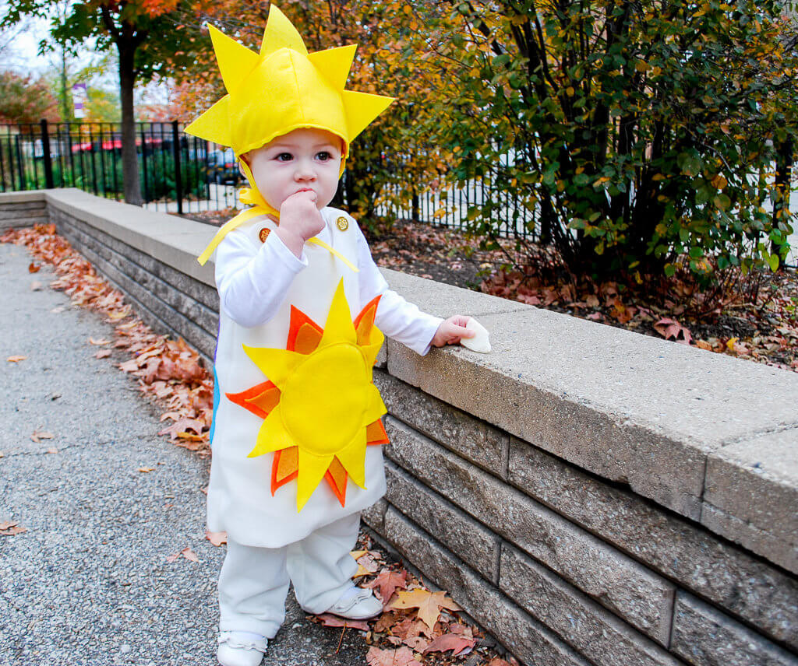

10 Unique Free Homemade Kid and Baby Halloween Costume Patterns
by 10 Unique Free Homemade Kid and Baby Halloween Costume Patterns
Last Updated - 5 Days Ago

had been planning a kids' Halloween costumes hub for a while before I put this together. I put the idea and did not find anything when I searched for routines. I got motivated to try again As soon as I saw the HubPages Weekly Topic Inspiration was Halloween. I revised my selection of key words once I found and searched choices. A number of them are blog articles from mothers who recorded the procedure and developed costumes to their . When I was growing up my mother left lots of my outfits. I am hoping to do the exact same for my children my abilities leave much to be desired now|I am hoping to do the exact same for my children, Though my abilities leave much to be desired now. For all those who like projects, these can get you started for Halloween.
A number of these jobs are designed for infants or children of ages. Do not feel restricted. A number of theories and the routines can be altered for kids of just. Happy creating!
Cat in the Hat, Thing 1, and Item Two
This notion can be one of the Halloween costumes and was my search I have ever seen. The idea is easy, making for costumes for small ones. This is a cute costume, in the event that you have children that aren't crazy about wearing the drapes. You can go for Item 1 and Thing 2 In case you've got 2 children or you could attempt to recruit among the age relatives or friends to function as Cat in the Hat. Children will delight in the characters and adults will appreciate the nostalgia for a book.
Cat in the Hat, Thing 1 & Thing 2! | What Your Mama Made &
Bat
The appearance that is eery is actually completed by the mask onto this costume. The writer proposes using the child wear sunglasses on the other side of the mask for your eye appearance that is dark. This is so straightforward but so powerful. Click and then cut out.
Do-It-Yourself Kids Bat Costume | Alphamom
Flower Pot
This is a idea for a small girl. She's a great deal of fun arranging the flowers and picking out. She could love decorating the flower bud if she is not interested in this. Children might want to perform both. I suggest taking a look for tights at Target. They carry styles or an adequate selection, colours, and dimensions through the majority of winter and the autumn. I have linked the idea website that prompted the tutorial and the tutorial which I discovered. I love the way the website involves a watering can.
Kids' Halloween Costumes - Unique Costumes - Flower Pot
Ruffles and Roses: Children' Flower Pot Halloween Costume - Guest Tutorial!
Spider
This costume demands simple to locate assembly and materials. (If you can not locate white gloves, consider producing your own.) The end result is fabulous. The eyes on how the arms move and also the hat up cracks me. If you enjoy this notion but understand that your child doesn't have any interest in being a spider. Consider how to transform this idea to a different insect, like caterpillar or a ladybug. This website has a range of child costume ideas.
Tinkerbell
I am certain I do not have to elaborate on the reality that a number of girls love to dress up in practically any costume which demands a gown or a tutu. This routine does need some experience for your lacing, but it's a project that is really cheap. If a girl is fond of the colour green or is not into Tinkerbell, contemplate altering the colour or changing the costume so that she could be a fairy, princess, queen, or some other woman of her picking. The outfit will be completed by A wand.
Yoda
The woman is so cute, although I am uncertain just how much this costume looks like Yoda. It is an amazing costume. Some face paint will finish the look to get a child? The hat may be changed to a jester's cap. The snake does not fit in the Star Wars theme but can be left out, if it's going to only be a diversion to your child as will the walking pole. Have a look at the Yoda link below for accessories and a few Yoda costume suggestions.
Children Yoda Costume @Craftzine. Com website
Care Bear
This is. This is why I love men and women that are crafty. This can be a fun project When you get over the notion of gutting a bear. Have fun picking your favourite colour Care Bear and also prepare for the abundance of awwwww's you will get if your friends, family members, and acquaintances visit that your child in this receive up.If you have difficulty locating a large Care Bear, you might choose to decide on a massive teddy bear rather than This is only one of those jobs that can not be altered for children, unless you are able to locate a bear that is larger. You might have the ability to change a children' bear costume with details and the colours to get a similar impact.
Baby Care Bear Costume
Snapsuit Baby Costumes
All four pendants are fantastic, although I chose this one due to the print simmer to your strongman costume. This informative article includes directions for a witch, a munchkin, the guy, and a sasquatch|a munchkin, the guy, a witch, and a sasquatch|a sasquatch, a munchkin, a witch, and the guy|a munchkin the guy, a witch, and a sasquatch. You will find at least 2 pictures of each one the costumes and instructions. The suit costume that is snap works well with little ones, but the can be altered for older children|The can be altered for older children, although the suit costume that is snap works well with little ones|The can be altered for older children, although the suit costume works well with little ones.
Snapsuit Baby Costumes . Craft Apparent with Vickie Howell . PBS Parents | PBS
Skeleton
This routine doesn't need any sewing! Freezer paper produces a superb effect and makes the job straightforward. As apparel for the remainder of the calendar year provided that the glow in the dark paint is not too distracting, this ensemble can twice. I've included two hubs out of instructables.com inside this hub. Check the website for costume ideas out.
Freezer Paper Skeleton Costume
Pumpkin
I love this take on the pumpkin costume. Creating a tutu is another reason why I love men and women that are crafty. That is so adorable! The woman that is imagined does not have coordinating clothing, but you might have fun looking to coordinate. You may earn a pumpkin hat. The instructions and photographs are fantastic, although this routine does need stitching.
Halloween Costume: Tutu Pumpkin For Toddler | Free Pattern & Tutorial in CraftPassion.com
Cute Baby Halloween Costumes
Halloween Costumes for Kids
More fall funds from the writer.
Halloween and Fall Treats Popcorn Recipes, and Suggestions
Fall is the best time to whip up popcorn recipes for friends and family! Make snacks for birthdays, Thanksgiving, Halloween fall parties, and much more.
Acorn Crafts: Reduce Ideas and Autumn Projects
This guide is all about acorn crafts. It comprises a huge array of thoughts and fall projects that grownups and children can make from acorns. There are a number of tools and pictures.
Fall Themes and Components for Pre K, Preschool, and Kindergarten: Tasks Lesson Plans, and C Think about, as you plan Pre K your own lecture, or kindergarten program. You will find infinite possibilities for crafts, activities, and lesson plans.
Leave a Comment:
Search
Advertisement